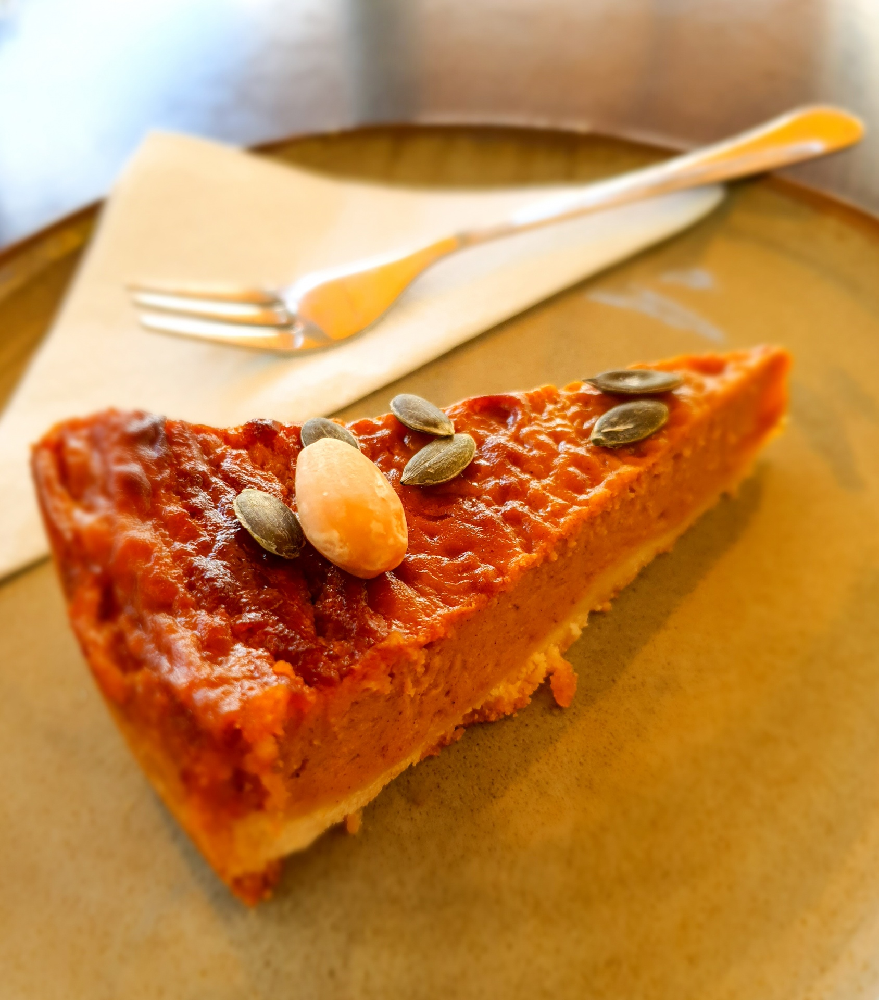

Pumpkin Pie Recipe
Home

A freshly baked pumpkin pie is warm, smooth, and full of comforting flavor. The creamy pumpkin filling is perfectly spiced with notes of cinnamon and nutmeg, all nestled inside a tender, flaky crust. Rich, slightly sweet, and beautifully aromatic, every slice is a classic taste of fall.
This pumpkin pie is a timeless favorite thanks to its simple ingredients and rich, comforting flavor. You can easily adjust the spices or sweetness to match your preference. If you’d like to prepare it the traditional way, here’s what you’ll need before you begin:
Ingredients needed for this pumpkin pie
- Pumpkin Purée: Smooth and naturally sweet, it forms the rich and creamy base of the pie.
- Sweetened Condensed Milk: Adds sweetness and creates a velvety, smooth texture.
- Eggs: Help bind the filling together and give it structure.
- Ground Cinnamon: Brings warm, sweet spice to the filling.
- Ground Nutmeg: Adds a subtle depth and cozy aroma.
- Salt: Enhances and balances the overall flavor.
- Pie Crust: A flaky base that holds the creamy filling and bakes to golden perfection.
How much do you need for an original recipe (1X)?
- 1 (15-ounce) can pumpkin puree/li>
- 1 (14-ounce) can Eagle Brand Sweetened Condensed Milk
- 2 large eggs
- 1 teaspoon ground cinnamon
- 1/2 teaspoon ground ginger
- 1/2 teaspoon ground nutmeg
- 1/2 teaspoon salt
- 1 (9-inch) unbaked pie crust
Directions
- Gather all ingredients and preheat the oven to 425 degrees F (220 degrees C).
- Whisk pumpkin puree, condensed milk, eggs, cinnamon, ginger, nutmeg, and salt together in a medium bowl until smooth.
- Pour into crust. Bake in the preheated oven for 15 minutes.
- Reduce oven temperature to 350 degrees F (175 degrees C) and continue baking until a knife inserted 1 inch from the crust comes out clean, 35 to 40 minutes. Let cool before serving.
- Enjoy!